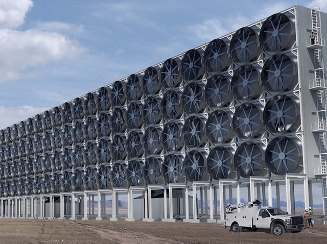

The overwhelming amount of carbon dioxide (CO2) in our atmosphere is vastly responsible for the climate change facing our world today. Our emission levels have greatly outgrown our environment’s natural assimilative capacity of CO2 and we are now faced with significant threats. Rising sea levels, extreme weather patterns and dangers to Earth’s biodiversity are all symptoms of this issue. Nonetheless, the CO2 in our atmosphere contains a salvageable element: carbon. Carbon is one of the main chemical components of combustible fuels. In fact, the Canadian firm, Carbon Engineering (CE) has been developing systems that extract the carbon from atmospheric CO2. The extracted carbon is then synthesized into combustible fuel, fit for today’s vehicles. These systems could greatly reduce the need to exploit fossil fuels as the main source for carbon. Carbon Engineering’s work could help lead the transportation sector to be carbon-neutral; it functions without contributing more CO2 to our atmosphere.
So how is this done? It is a two-step process, the first being Direct Air Capture (DAC). This system filters atmospheric air to isolate its CO2 content. Through the use of water and energy, the CO2 is purified and compressed. This system is inherently useful as it allows extraction of CO2 from the atmosphere. What happens with the compressed CO2 is the real point of interest.
The second process, AIR TO FUELSTM , offers a use for the CO2 that has been extracted from the air. Through processes involving water, air, and energy, the CO2 gained from DAC is combined with hydrogen to produce a synthetic fuel. This process offers significant environmental advantages to extracting crude oil, namely the fact that AIR TO FUELSTM tech requires 100X less land- and water-use than typical fuel production. Nonetheless, electrolysis (separating hydrogen from the oxygen in water) requires significant electricity usage. To ensure a low environmental footprint, CE’s plant sources this energy from renewable hydro-electricity.
The fuel derived from AIR TO FUELSTM is competitive with fuels extracted from crude oil in almost every way. First, it is compatible with any current engine: there is no need for any infrastructure changes to implement this clean fuel source. It can also be developed into gas, diesel, or jet fuel. Second, it is much more chemically consistent, which leads to fuller combustion of the fuel. This allows for better fuel economy and cleaner exhaust emissions.
This technological advancement will have economic impacts on the fuel industry. CE’s current work shows that a litre of their fuel can currently be synthesized for less than one dollar, which allows them to stay cost-competitive with current producers. This figure is also subject to change as CE continues to enhance and perfect their processes. CE’s fuels are not subject to volatile changes in price like current fuel producers. That is to say, CE will never face a shortage of CO2 to produce their fuel; as their fuels are utilized, the CO2 re-enters the atmosphere and is once again available for their use. Their systems are not dependent on geographical pockets of resources (i.e., oil sources), which diffuses the risk of political monopolies and disagreements impacting fuel markets. Furthermore, with impending developments on a nation-wide carbon tax in an effort to abide by the Paris Agreement, it seems likely that CE’s fuels would be exempt from carbon taxes. Current carbon tax policy outlines that they apply to “each tonne of emissions from fossil fuel sources, be it from coal, natural gas, gasoline, etc”. CE’s fuels, while still emitting CO2 in their combustion, are not sourced from fossil fuels. Unless policy changes, CE’s fuel is not impacted by any carbon tax; a lack of supplementary taxes on top of the high prices of fuel renders CE’s fuel more appealing to consumers. Overall, CE’s entry as a fuel supplier would lead to much more stable and competitive prices at the pump for consumers.
It is important to note that CE is not the first firm to develop a method for carbon-capture. Their advantage in this industry is the cost-effectiveness of their capture system. Until recently, the cost of direct air capture was believed to be $600 per ton. CE performs the same capture at less than $100 per ton, after years of research and upsizing. Another factor that has distinguishes CE from other carbon-capturers is the refining of carbon to produce a final good: fuel. There are too few buyers of carbon on the international market for CE to be profitable simply as a carbon seller. This is what lead them to develop the AIR TO FUELSTM system. This complete process, from carbon-capture to fuel production, is what makes CE’s work so promising.
But how does this all fit in with the ongoing electric car movement? CE’s major advantage rests in the certainty that their systems produce fuels that are compatible with current engines. There is no need for systematic overhaul, like introducing charging stations at gas-pumps, contrary to electric cars. Yet, CE has already fallen behind; the electric car movement has gained significant traction and shows important advantages. The lower costs of maintenance due to the fewer moving parts in an electric engine renders it especially appealing to customers. Government subsidies for purchasing electric and hybrid vehicles are also enticing. These factors combined have provided the electric vehicle industry with a leg-up.
 Figure 1: Carbon Engineering’s proposed design for 2021.
Carbon Engineering does have promising plans. Construction of a larger plant is underway and is expected to produce 2000 barrels of fuel per day starting in 2021. Vehicle-owners would undoubtedly benefit from seeing CE’s fuels at the pump, but can CE upsize fast enough to assert itself as a significant player in this industry before consumers flock towards electric cars? Government intervention will be a major guiding factor in this race; will subsidies for electric vehicles keep motivating their sales, or will the government gladly embrace carbon-neutral fuels and promote their usage through policy implementation? Regardless, CE has an overarching advantage over electric cars: their adaptability. CE’s fuels can be used for jet fuel as well as diesel. They might lose the race for personal vehicles, but CE’s progress could lead them to dominate the fuel industry for heavy machinery and airplanes. Their carbon-neutral fuels are here to stay.